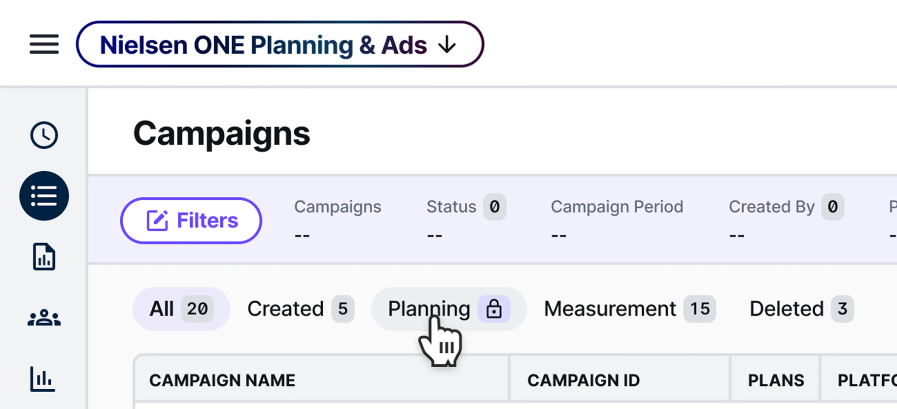
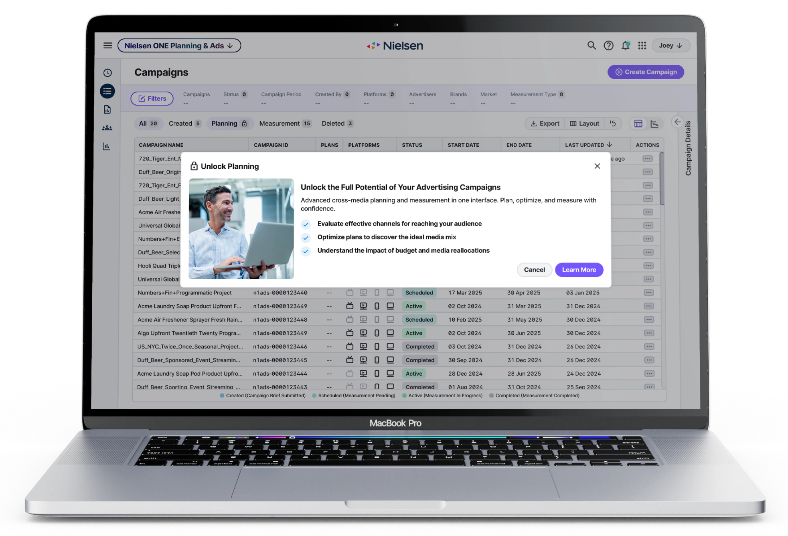
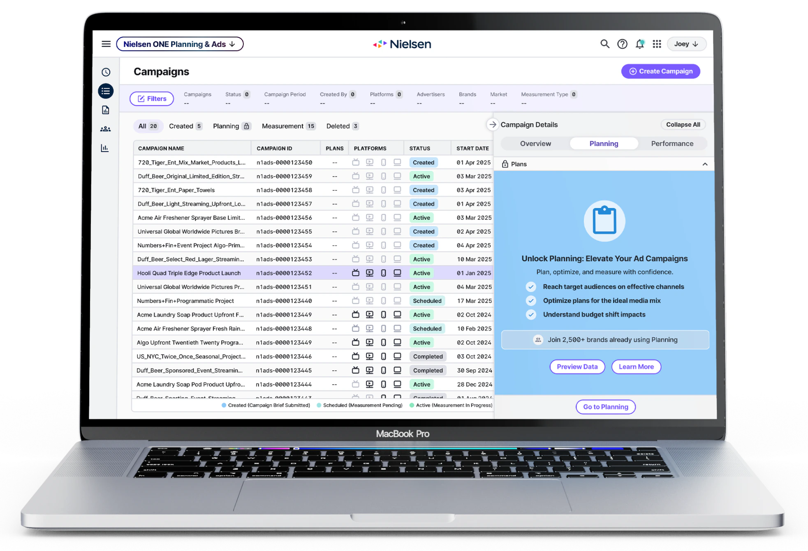
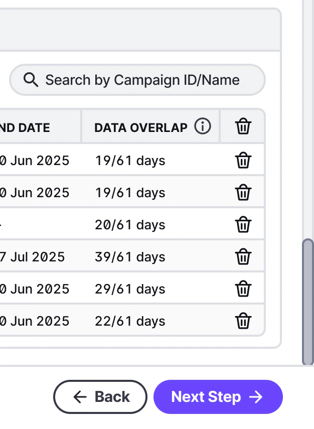
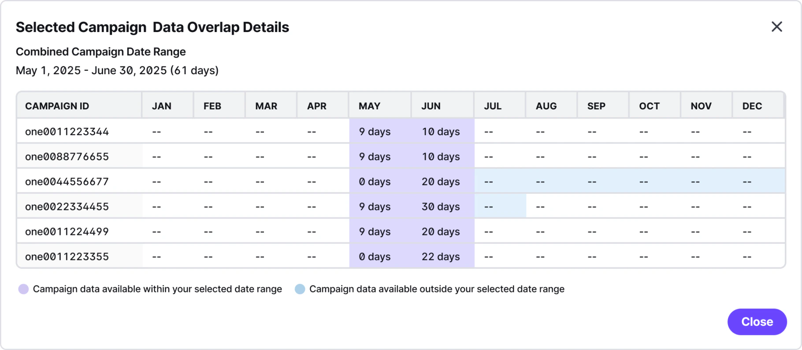
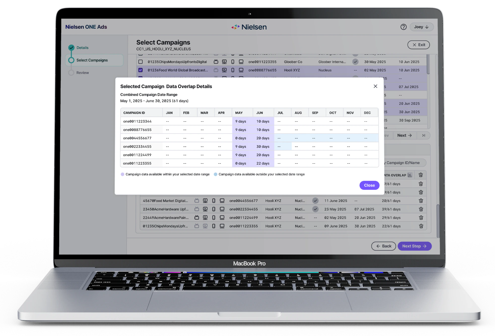

Three entry points, one clear path.
The first entry point was the Planning tab in the main navigation. My supervisor suggested using a lock icon to signal the feature was gated. I kept it small and inline with the tab label so it wouldn't disrupt the navigation's visual rhythm, informational rather than alarming. On hover, I added a bold outline state to make it feel clickable. Without it, users might have assumed the tab was simply disabled and moved on.

Clicking the lock opens a modal rather than a redirect. Taking users to a new page mid-task would have broken their flow and made it harder to return. The modal keeps them in context: they can read about the feature and close it without losing their place. The Cancel button was intentional too. A user who knows they can leave is more willing to stay and read. The modal itself uses a short header, three scannable outcome statements, and a supporting image. Enterprise users scan rather than read paragraphs.

A user who has clicked into Campaign Details is in a different mindset than someone browsing the nav. They're looking at a specific campaign, a natural moment to show them what Planning could do with that data. I designed a card with two CTAs. Preview Data was an existing feature that let users sample Planning with their own data, surfacing it here gave a low-commitment way to try before upgrading. Learn More served users who needed more context before deciding.
After the first review, stakeholders felt the card needed more credibility. I added a social proof badge ('Join 2,500+ brands already using Planning') at the bottom of the card. For enterprise buyers, knowing that peers are already using something reduces the perceived risk of upgrading. It was a small addition, but it shifted the card from a pitch to proof.

The first color pass on the card clashed in both light and dark mode, making it feel visually jarring. I reworked the palette to sit more calmly within Nielsen's design system. I also built out short and long content variants using Figma component properties, something I added proactively rather than because it was asked of me. Real content is unpredictable, and a design that only works at one character count creates problems for developers. Having every state documented meant the team could build without guessing.


From a missed opportunity to a system with intent.
The designs were approved after two rounds of iteration and handed off to development. The Planning feature went from a tab nobody clicked to three entry points, each timed to a different moment: the lock for users scanning the nav, the modal for users curious enough to click, the card for users already deep in a campaign. The feature didn't change. When and how it asked for attention did.
This project taught me that in B2B, trust is part of the design. An exit path in a modal, a social proof badge, a palette that doesn't fight the interface: none of these sell the feature. They make the moment of being asked feel safe. That is the difference between an upsell users consider and one they dismiss.
Campaign Builder - turning raw backend data into a decision-making tool
Reports built on assumptions, not data.
When users combined campaigns in Nielsen ONE, they had no way of knowing how much data actually existed within their chosen date range. They were building reports blind, and if the campaigns didn't overlap the way they expected, the report would come back with gaps. There was no indicator anywhere in the flow to flag this before it happened.
One column. Two checkpoints.
I proposed adding a Data Overlap column to the Selected Campaigns table, showing available data as a ratio. '19/61 days' meaning 19 days of data existed within a 61-day selected range. I scoped it to the Selected Campaigns section only, not the full list of 512 campaigns above it. Showing it across the full table would have cluttered the UI and added unnecessary backend load. I anticipated this as a constraint before starting and confirmed it with the dev team. The column also carries through to the review step, giving users one final check before committing to generating a report.

The ratio format was a start, but it didn't tell users which months had data and which didn't. I added an info icon next to the column header, a standard Nielsen component users already recognize. On hover, a tooltip reads 'View detailed overlap.' I made it a click to open rather than hover to expand because the full table is dense. Users need time to scan it, and a hover state would have disappeared the moment they moved their cursor.

Clicking opens a modal with a redesigned overlap table. The reference point I was working from was a raw backend spreadsheet with columns for CC ID, start dates, and data availability strings like '19 [May (9), Jun (10)]', built for engineers rather than media buyers.

My version restructures the same data into a calendar-style layout organized by month, with each campaign as a row. Days within the selected range are highlighted in one color, days outside in another, with a legend at the bottom. The same information becomes immediately visual. You can see at a glance which campaigns have strong coverage for your window and which fall short, without decoding anything.

From blind commitment to informed decisions
After two iterations, the designs were approved and handed to dev. Before this project, users had no way to know whether their selected campaigns actually had data for the date range they chose. They were committing to reports without enough information to make that call confidently. After handoff, the same workflow surfaced data availability at two levels: a quick ratio in the table for users who needed a scan, and a full calendar breakdown one click away for users who needed to go deeper. The redesign didn't add new data. It made existing data legible at the right moment.

Working with complex backend data taught me that clarity is its own form of design. The data was already there. My job was to restructure it into something users could actually act on. That is a problem I want to keep solving.